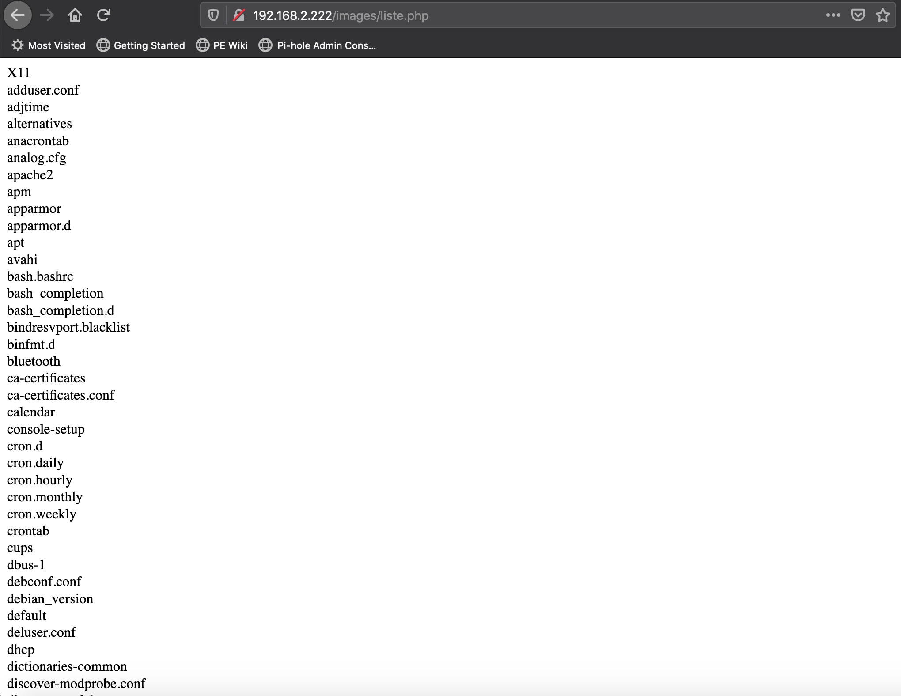

Programmation d'applications sécurisées
OWASP Top 10
| Risk | Description |
|---|---|
| A1:2017-Injection | Une faille de type injection, comme une injection SQL, une injection de commande système, ou une injection LDAP, se produit quand une donnée non fiable est envoyée à un interpréteur en tant qu'élément d'une commande ou d'une requête. Les données hostiles de l'attaquant peuvent duper l'interpréteur afin de l'amener à exécuter des commandes fortuites ou accéder à des données non autorisées. |
| A2:2017-Authentification de mauvaise qualité | Les fonctions applicatives liées à l'authentification et à la gestion des sessions sont souvent mal implémentées, ce qui permet aux attaquants de compromettre des mots de passe, des clés ou des jetons de session, ou encore d'exploiter d'autres failles d'implémentation pour usurper temporairement ou définitivement l'identité d'autres utilisateurs. |
| A3:2017-Exposition de données sensibles | Beaucoup d'applications web et d'APIs ne protègent pas correctement les données sensibles telles que les données bancaires, les données relatives aux soins de santé, les données personnelles d'identification. Les pirates peuvent alors voler ou modifier ces données mal protégées pour effectuer une usurpation d'identité, une fraude à la carte de crédit ou d'autres crimes. Les données sensibles méritent une protection supplémentaire tel un chiffrement statique ou en transit, ainsi que des précautions particulières lors de l'échange avec le navigateur. |
| A4:2017-XML External Entities (XXE) | De nombreux processeurs xml, anciens ou mal configurés, évaluent les références aux entités externes dans les documents XML. Les entités externes peuvent être utilisées pour divulguer des fichiers internes à l'aide du gestionnaire d'URI, pour faire des partages de fichier interne, pour faire de l'analyse interne de ports, pour exécuter du code à distance, pour faire des attaques par déni de service. |
| A5:2017-Violation de contrôle d'accès | Les restrictions sur les droits des utilisateurs authentifiés sont souvent mal appliquées. Les attaquants peuvent exploiter ces failles pour accéder à des fonctionnalités et/ou des données non autorisées. Par exemple, accéder aux comptes d'autres utilisateurs, visualiser des fichiers sensibles, modifier les données d'autres utilisateurs, modifier les droits d'accès, etc. |
| A6:2017-Mauvaise configuration Sécurité | La mauvaise configuration de la sécurité est le problème le plus répandu. C'est généralement le résultat de configurations par défaut non sécurisées, de configurations incomplètes ou ad hoc, d'un stockage dans un cloud ouvert, d'en-têtes HTTP mal configurés et de messages d'erreur verbeux contenant des informations sensibles. Non seulement tous les systèmes d'exploitation, frameworks, bibliothèques et applications doivent être configurés de façon sécurisées, mais ils doivent également être corrigés et mis à jour en temps et en heure. |
| A7:2017-Cross-Site Scripting (XSS) | Les failles XSS se produisent chaque fois qu'une application inclut des données non fiables dans une nouvelle page Web sans les valider ou les échapper de façon appropriée, ou lorsqu'elle met à jour une page Web existante avec des données fournies par l'utilisateur à l'aide d'une API de navigateur permettant de créer du HTML ou du JavaScript. Le XSS permet aux attaquants d'exécuter des scripts dans le navigateur de la victime et ainsi de détourner des sessions utilisateurs, de défigurer des sites Web ou de rediriger l'utilisateur vers des sites malveillants. |
| A8:2017-Désérialisation non sécurisée | La désérialisation non sécurisée conduit souvent à l'exécution de code arbitraire à distance. Même si les failles de désérialisation n'entraînent pas l'exécution de code distant, elles peuvent être utilisées pour effectuer d'autres attaques, notamment des attaques par rejeu, des attaques par injection et des attaques par élévation de privilèges. |
| A9:2017-Utilisation de composants présentant des vulnérabilités connues | Les composants, tels que les bibliothèques, frameworks et autres modules logiciels, fonctionnent avec les mêmes privilèges que l'application. Si un composant vulnérable est exploité par une attaque, cela peut entraîner de graves pertes de données ou la compromission du serveur. Les applications et les API utilisant des composants dont les vulnérabilités sont connues peuvent compromettre leurs défenses et permettre diverses attaques et impacts. |
| A10:2017-Journalisation & Surveillance insuffisantes | L'insuffisance de journalisation et de surveillance, couplée à une intégration avec la réponse aux incidents, inefficace ou absente, permet aux pirates d'attaquer des systèmes de façon plus avancée, de maintenir la persistance, de basculer vers d'autres systèmes, et de falsifier, extraire ou détruire des données. La plupart des études de failles montrent que le temps nécessaire pour détecter une faille est supérieur à 200 jours. Généralement, cette faille est détectée par des parties externes plutôt que par une surveillance ou des processus internes. |
À partir du cours d'aujourd'hui, nous allons prendre une application simple codée en PHP qui est insécure. À chaque cours, nous allons modifier l'application pour la rendre plus sécuritaire.
MonMur
MonMur est une application qui permet à vos amis d'écrire des petits mots sur votre site Web. À la fin du cours, MonMur aura les fonctionnalités suivantes :
- Permettre d'écrire de manière anonyme
- Permettre de créer un compte pour voir et modifier les petits mots écrits auparavant
- Permettre à des administrateurs de visualiser les comptes utilisateurs, les supprimer et modérer les commentaires
Permier jet de MonMur
<?php
// database.php sert à interagir avec la base de données
require_once('database.php');
require_once('commun.php');
session_start();
$erreur = '';
$commentaire = '';
// Traiter l'image, s'il y a lieu
traiterImage($nom_image, $erreur);
// Ajouter le commentaire à la base de données sauf s'il y a une erreur
if(isset($_POST['commentaire'])) {
if($_POST['commentaire'] && $_POST['commentaire'] != '') {
$commentaire = $_POST['commentaire'];
enregistrerCommentaire($commentaire, $nom_image, utilisateurCourant());
retourAuMur();
exit();
} else {
$erreur = 'Le commentaire est invalide. Veuillez réessayer.';
}
}
// Dessiner l'interface utilisateur
$html = debutHtml()
. formulaireCommentaire("monmur.php", $commentaire, 0, $erreur)
. afficherCommentaires()
. finHtml();
print $html;
function afficherCommentaires(){
$resultats = listeCommentaires();
$monmur = '';
while($ligne = $resultats->fetch_assoc()){
$commentaire = trim($ligne["commentaire"]);
// Remplacer les retour de chariot par l'équivalent html
$commentaire = str_replace("\n", '<br/>', $commentaire);
$commentaire_id = $ligne["commentaire_id"];
$image = $ligne["image"];
$code_utilisateur = trim($ligne["codeutilisateur"]);
$monmur .= <<<fin
<div class="commentaire">
<div class="commentaire_entete">
<div class="utilisateur">{$code_utilisateur}</div>
<div class="commentaire_id">{$commentaire_id}</div>
</div>
<div class="commentaire_texte">{$commentaire}</div>
fin;
if(!empty($image)) {
$monmur .= "<img src='/images/{$image}'/>";
}
// Afficher les actions seulement si c'est l'utilisateur qui est l'auteur
if($code_utilisateur == utilisateurCourant() && utilisateurCourant() != ANON) {
$monmur .= <<<fin
<div class="commentaire_pied">
<div class="commentaire_action">
<a href="modifier.php?id={$commentaire_id}">Modifier</a>
</div>
<div class="commentaire_action">
<a href="javascript:ConfirmerSupression({$commentaire_id})">Supprimer</a>
</div>
</div>
fin;
}
$monmur .= "</div>";
}
return $monmur;
}
?>
Traitement des erreurs
Le bon traitement des erreurs dans votre code est essentiel pour :
- Que l'utilisateur ne pense pas qu'il a brisé votre site Web dès qu'une erreur survient
- Les pirates utilisent le contenu des erreurs brutes comme source d'information
Conditions limites
Un aspect important pour éviter les erreurs est de se prévenir contre ce que l'utilisateur peut saisir dans notre page qui ne devrait pas y être.
Exemples de conditions limites :
- Entrée vide
- Caractères de contrôle
- Caractères non-alphanumériques
- Entrée excessivement grande
- Données binaires
- Entrée dans une autre page de code (UTF-8, ASCII, etc.)
- Injection SQL
- Injection de code
- XSS
Important
La règle d'or lors de l'écriture des conditions limites est de refuser tout ce qui est suspicieux.
Mécanisme de traitement des erreurs
Pour s'assurer que toutes les entrées à votre application Web aient la même gestion d'erreurs, il est recommandé de bâtir un mécanisme de traitement des erreurs. Ce mécanisme sera utilisé à travers l'application. Deux raisons :
- Ça évite des oublis
- C'est consistant
Dans votre application, certains choix devrons être faits. Est-ce que l'application devrait accepter le code HTML dans les commentaires? D'un côté, ce peut être intéressant pour les utilisateurs de mettre en gras son commentaire, mais accepter le HTML ouvre la porte aux pirates.
Pour enlever le code HTML d'une entrée :
$texte_a_nettoyer = "Tu es <em>le</em> meilleur!";
$texte_propre = strip_tags($texte_a_nettoyer);
$texte_propre aura la valeur "Tu es le meilleur!".
Au lieu de permettre le HTML pour formater les commentaires, il est possible d'utiliser un autre langage tel que Markdown. Il y a un module PHP qui aide pour ça :
$Parsedown = new Parsedown();
$Parsedown->setSafeMode(true);
$commentaire = $Parsedown->text($ligne["commentaire"]);
Si c'est important pour vous de permettre le HTML, privilégiez l'utilisation d'un module tel que celui-ci :
Testons MonMur :
Caractères de contrôle :
"
Comment le corriger :
$commentaire = addslashes($commentaire);
Commentaire trop long :
Da Da, ooooh
Well, my friends, the time has come
(To) raise the roof and have some fun
Throw away the work to be done
Let the music play on...(Play on, play on, play on.)
Everybody sing, everybody dance
Lose yourself in wild romance
We're going to Party, Karamu, Fiesta, forever
Come on and sing along!
We're going to Party, Karamu, Fiesta, forever
Come on and sing along!
All night long (all night), All night (all night)
All night long (all night), All night (all night)
All night long (all night), All night (all night)
All night long! (all night), Ooh, yeah (all night)
People dancing all in the street
See the rhythm all in their feet
Life is good, wild and sweet
Let the music play on...(Play on, play on, play on...)
Feel it in your heart and feel it in your soul
Let the music take control
We're going to Party, Liming, Fiesta, forever
Come on and sing along
We're going to Party, Liming, Fiesta, forever
Come on and sing my song!
All night long (all night), oooh, (all night)
All night long (all night), yeaz, (all night)
All night long (all night), yeah, (all night)
All night long (all night)...(all night)
Yeah, once you get started you can't sit down
Come join the fun, it's a merry-go-round
Everyone's dancing their troubles away
Come join our party, See how we play!
[Chant}
Tam bo li de say de moi ya
Hey Jambo Jumbo
Way to parti o we goin'
Oh, jambali
Tam bo li de say de moi ya
Yeah, Jambo, jumbo
Oh, O, O, O, yes
We're going to have a party! (Yeah... ugh)
All night long (all night), All night, (all night)
All night long (all night), All night, (all night)
All night long (all night), All night, (all night)
All night long (all night)...(ugh)
We're going to Party, Kalamu, Fiesta, forever
Come on and sing along!
We're going to Party, Kalamu, Fiesta, forever
Come on and sing my song!
All night long (all night), All night, (all night)
All night long (all night), All night, (all night)
All night long (all night), All night, (all night)
All night long (all night)...(ugh)
All night, (all night), All night, (all night),
All night, (all night), All night, (all night),
All night, (all night), All night, (all night),
All night, (all night), Ugh, (all night),
Everyone you meet (all night)
They're jamming in the street (all night)
All night long! (All night)
Yeah, I said, (All night)
Everyone you meet (All night)
They're jamming in the street (All night)
All night long! (All night)
Feel good! Feel good! (All night)
(All night to fade)
All Night long - Rhett and Link
Comment corriger :
Deux choix :
Couper le commentaire à la longueur maximale du champ de la base de données :
$commentaire = substr($commentaire, 0, 1000);
OU
Afficher un message d'erreur que le commentaire est trop long :
if(mb_strlen($_POST['commentaire']) <= 1000) {
$commentaire = $_POST['commentaire'];
enregistrerCommentaire($commentaire, $nom_image, utilisateurCourant());
retourAuMur();
exit();
} else {
$erreur = 'Le commentaire est trop long. Veuillez réessayer.';
}
XSS :
<script>alert('Doh!')</script>
Comment corriger :
- En enlevant les tags html complètement
- En utilisant un module qui transforme le commentaire à l'affichage (voir ParseDown)
- En utilisant un module qui fait du ménage sélectif (voir HTML purifier)
Téléversement de fichiers
L'application MonMur permet de téléverser des images pour les commentaires. Un pirate peut abuser de cette fonctionnalité pour injecter du code PHP dans le serveur pour en prendre possession.
Téléversons un fichier nommé liste.php :
<html><body>
<?php echo str_replace("\n", '<br/>',shell_exec("ls /etc/"));?>
</body></html>
MonMur copie les images dans le répertoire /images. Donc, on peut maintenant exécuter le code dans la barre d'adresse : http://192.168.2.222/images/liste.php
Résultat de liste.php

Il faut donc limiter les formats de fichier à accepter.
Commençons par interdire les fichiers avec l'extension .php :
if (substr($image_cible,-3) == 'php') {
$nom_image = '';
$erreur = 'Ceci n\'est pas une image!';
return 0;
}
On ne peut plus téléverser liste.php. Utilisons le bon vieux truc de la double extension et renommons le fichier liste.php.jpg.
Le logiciel accepte sans problème le fichier qui peut être exécuté comme suit :
http://192.168.2.222/images/liste.php.jpg
La magie de ceci est une configuration du serveur qui permet d'exécuter tout script qui a la mention php dans son nom :
<FilesMatch ".+\.ph(ar|p|tml)">
SetHandler application/x-httpd-php
</FilesMatch>
<FilesMatch ".+\.phps">
SetHandler application/x-httpd-php-source
# Deny access to raw php sources by default
# To re-enable it's recommended to enable access to the files
# only in specific virtual host or directory
Require all denied
</FilesMatch>
# Deny access to files without filename (e.g. '.php')
<FilesMatch "^\.ph(ar|p|ps|tml)">
Require all denied
</FilesMatch>
Corrigeons la configuration (le $ à la fin du regex indique que c'est à la fin du nom du fichier, donc .php accepté, .php.jpg ne l'est pas.):
<FilesMatch ".+\.ph(ar|p|tml$)">
SetHandler application/x-httpd-php
</FilesMatch>
<FilesMatch ".+\.phps$">
SetHandler application/x-httpd-php-source
# Deny access to raw php sources by default
# To re-enable it's recommended to enable access to the files
# only in specific virtual host or directory
Require all denied
</FilesMatch>
# Deny access to files without filename (e.g. '.php')
<FilesMatch "^\.ph(ar|p|ps|tml)$">
Require all denied
</FilesMatch>
Lectures supplémentaires
Documentation de MarkDown
Pirater les fichiers téléversés
OWASP_Top_Ten
Important
Prenez quelques minutes pour faire votre cartographie de la leçon d'aujourd'hui!